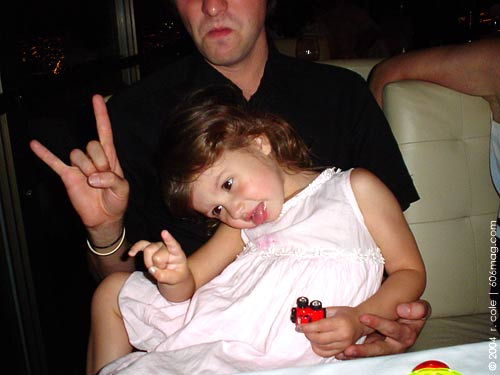

 |
Michelle and Brandy are psyched to see the Lounge Puppets. So psyched that they're pounding as many Bud Lights as they can before the show starts, so they'll have "a nice buzz on and two fists for pumpin.'" I ask them if they've seen the band before and Michelle, in her best Axl Rose impression, screams, "Hell yeah! We saw them last week in Bolingbrook and they were fuckin' awesome!" But tonight the Lounge Puppets, a.k.a. the Midwest 's ultimate tribute to ‘80s hair bands, are getting ready to rock Aurora , Illinois . Not just regular Aurora , but an outdoor gazebo at Walter Payton's Roundhouse in Aurora . Now maybe it's just me, but when I think of Walter Payton the last thing that comes to mind is ‘80s hair metal. I picture number 34, Sweetness, the greatest running back of all time, leading Da Bears to the Super Bowl. I think of Ditka, the Fridge, and the Super Bowl Shuffle, not "Cherry Pie" or "Welcome to the Jungle." But here we are in Walter Payton's monument to beer, burgers and football, surrounded by life-size statues of Bears tossing the pigskin and paintings of Bears playing poker and we're getting ready to rock out to Skid Row and Bon Jovi in the heart of Aurora . Ah, Aurora . You know the one. The home of, sing it with me, Wayne 's World! Wayne 's World! Party time! Excellent! Just listen close enough and you can still hear the reverberations of “Bohemian Rhapsody” bouncing off the never-ending stream of strip malls, tanning salons and bowling alleys. And considering Aurora's two most famous (fictitious) residents are a couple of aspiring rockers with big hair and a penchant for air guitars, it should come as no surprise that an ‘80s cover band would be a big draw here. In fact, people are anticipating the Lounge Puppets so much that even before they take the stage – which is seriously a gazebo surrounded by lawn chairs – guys with beer guts are screaming "She's Only Seventeen" and girls with mullets are pouting "Pour Some Sugar on Me." Michelle and Brandy, on the other hand, are interested in one thing and one thing only – Guns N' Roses – and they chant "Sweet Child" over and over and over again. Then, with a thunderclap of the drums and a burst of fog and lights, the tribute begins. "Shot through the heart and you're to blame / You give love a bad name!" Instantly I am warped to 1986, and everyone around me is standing and singing "I play my part and you play your game / You give love a bad name ... bad name!" It doesn't matter that we're gathered around a gazebo gulping down overpriced beer. We are in the ‘80s and we're paying homage to the hirsute gods of metal. To my left there is a wedding party and the wide-eyed bride is screaming the words at her new husband. To my right there's a row of capri-clad soccer moms singing at the top of their lungs and dancing like a bunch of slutty groupies. Behind me there are the dudes trying to look cool, displaying the devil horns, and barely containing their giddiness. And in front of me there's Michelle and Brandy stomping their feet and pumping their fists in the air as the band seamlessly slides from Bon Jovi into Ratt's "Round and Round." I realize that the Lounge Puppets are less a tribute than a full-out worship at the altar of the leather-soaked, lipstick-smeared, liquor-stained gods of hair. Their show is a "we're not worthy" to the ‘80s and all of its androgyny, debauchery and unbridled libido. The singer, Pete Greco, is sleaze incarnate. A leather-clad cross of Dan Cortese, Steven Seagal and your stepmom's boyfriend, he constantly has one hand on his crotch while channeling the spirits of Jon Bon Jovi, Sebastian Bach, Bret Michaels and Vince Neil all in a span of four songs. Jason Sochacki embodies the ‘80s drummer, twirling his sticks and throwing his blond locks back with every hit of the snare. In true over-the-top ‘80s form, he is swallowed by a kit that takes up half the stage with six toms, two bass drums – one for Lounge and one for Puppets – and a superfluous amount of cymbals. He also controls the fog machine. The guitarist, Bob Irvine, is the consummate shredder, taking every opportunity to spin off a solo while his Jheri-curled wig hangs on for dear life. His leg kicks and Van Halen-esque hammer-ons perfectly suit his snakeskin axe. And Bill Dixon, the chest-baring bassist, is the true talent of the group, rocking the bass chops and leading acoustic versions of Poison's "Every Rose Has Its Thorn" and Tesla's "Signs." All together, they're a well-oiled, spandexed tribute machine. Sure, the show stumbled a bit when the singer asked, "Did anyone try the jalapeno shrimp?" and it was downright hilarious when the bassist took a bathroom break in the middle of "Talk Dirty to Me." And the stage was being rushed by bridesmaids and suburb bunnies instead of scantily-clad, Sunset-Strip groupies. But for one Friday night in a gazebo under the stars, the ‘80s rocked a Roundhouse in Aurora. I think Walter Payton would be proud. Catch the Lounge Puppets in all their hair-metal glory at Chicago City Limits on Oct. 2, North Beach on Oct. 16 and Nellie's Pub on Oct. 30. |